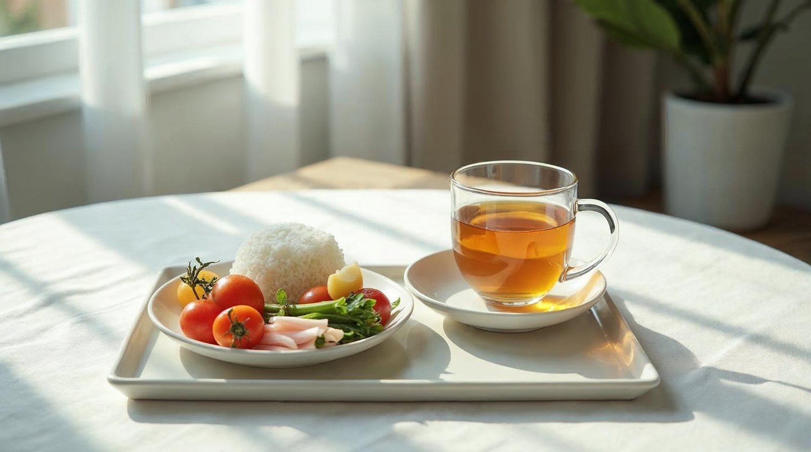
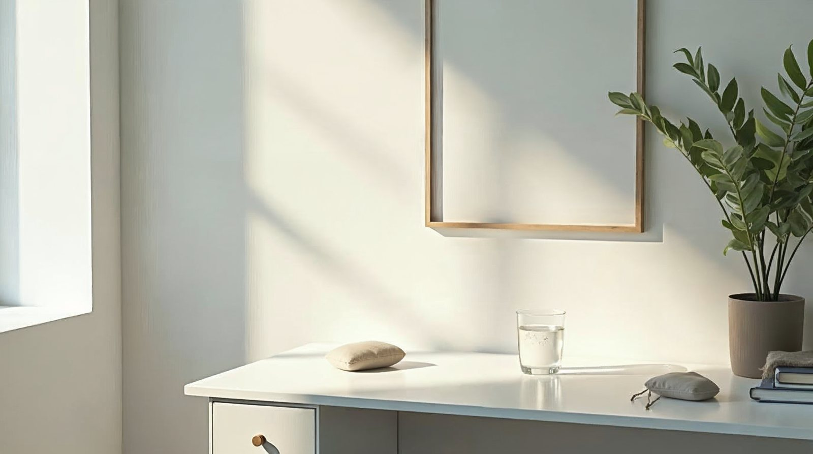
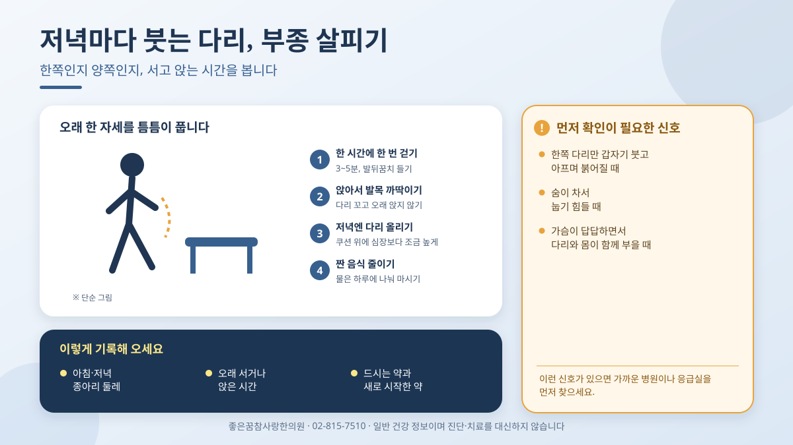

이종호 한의사 감수좋은꿈참사랑한의원 대표원장 (한의사 면허번호 19769)발행 2026-11-26 · 수정 2026-11-26
이 글의 차례
하루 일을 마치고 집에 들어와 양말을 벗습니다. 발목에 양말 고무줄 자국이 깊게 패어 있고, 정강이를 손가락으로 꾹 눌렀더니 자국이 한참 동안 사라지지 않습니다. 아침에는 들어가던 구두가 저녁이면 꽉 끼고, 종아리는 돌덩이를 단 것처럼 무겁습니다.
다리가 붓는다는 고민은 진료실에서 아주 흔하게 듣습니다. 서서 일하는 분, 하루 종일 앉아 있는 분, 연세가 드신 분, 임신 중인 분까지 나이와 하는 일을 가리지 않습니다. 그만큼 이유도 여러 가지라서, 붓기 하나를 두고도 나눠서 살펴볼 것이 많습니다.
"저녁에 붓는 건 다들 그렇다던데요." 이렇게 말씀하시며 오래 참아 오신 분도 많습니다. 실제로 많은 붓기는 생활 습관과 관련된 경우가 많지만, 몸속 장기가 보내는 신호인 경우도 있어서 한 번은 차분히 나눠 보는 것이 좋습니다.
저는 붓기 이야기를 들으면 먼저 세 가지를 여쭙니다. 한쪽 다리인지 양쪽인지, 언제 붓고 언제 빠지는지, 붓기 말고 다른 불편이 함께 있는지입니다. 이 세 가지 대답만으로도 살펴볼 방향이 상당히 좁혀집니다.
왜 저녁마다 다리가 부을까요
우리 몸의 혈관에서는 물이 조금씩 빠져나와 세포 사이를 적시고, 다시 혈관과 림프관으로 돌아갑니다. 이 들고 나는 흐름의 균형이 깨져 세포 사이에 물이 고이면 붓기가 됩니다. 다리는 심장에서 가장 멀고 낮은 곳이라, 중력 때문에 물이 고이기 가장 쉬운 자리입니다.
종아리 근육은 걸을 때마다 정맥을 쥐어짜서 피를 심장 쪽으로 밀어 올리는 펌프 역할을 합니다. 그래서 오래 서 있거나 앉아서 종아리가 움직이지 않으면 펌프가 쉬게 되고, 다리에 피와 물이 고이기 쉬워집니다. 저녁이 될수록 붓기가 심해지는 것은 이 때문입니다.
여기에 짠 식사, 더운 날씨, 생리 전 호르몬 변화, 일부 약이 더해지면 붓기가 커질 수 있습니다. 반대로 심장, 신장, 간, 갑상선처럼 몸속 장기의 기능이 떨어져서 생기는 붓기도 있어서, 생활 탓으로만 넘기지 않고 한 번은 나눠서 보는 것이 중요합니다.
한쪽인지 양쪽인지가 먼저입니다
양쪽 다리가 비슷하게 붓는다면 오래 서거나 앉는 생활, 짠 식사, 약, 또는 심장이나 신장처럼 온몸에 영향을 주는 원인을 먼저 생각합니다. 저녁에 붓고 아침에 빠진다면 생활 습관과 관련된 경우가 많습니다.
한쪽 다리만 붓는다면 그 다리에 국한된 원인을 먼저 살핍니다. 발목이나 무릎을 다친 뒤의 붓기, 무릎 뒤 물혹, 피부 염증, 정맥의 혈전 같은 경우입니다. 이런 경우에는 다친 기억이나 피부 변화가 있었는지, 붓기가 언제부터 시작됐는지를 자세히 여쭙습니다.
양쪽 굵기가 조금씩 다른 것은 흔한 일이라, 줄자로 발목 위와 종아리 가장 굵은 곳을 같은 시각에 재어 보시면 차이를 정확히 알 수 있습니다. 기록해 두시면 붓기가 늘고 주는 흐름도 함께 보입니다.
붓기의 여러 얼굴
붓기의 이유를 나눠 보면 대략 이렇습니다. 하나만 있는 분도 있고, 여러 가지가 겹친 분도 있습니다.
- 생활 습관 붓기: 오래 서거나 앉은 날 저녁에 심하고, 자고 나면 많이 빠집니다
- 정맥 순환 붓기: 다리에 핏줄이 도드라지거나 거미줄 같은 실핏줄이 보이고, 종아리가 무겁고 저녁에 쥐가 나기도 합니다
- 약과 관련된 붓기: 일부 혈압약, 소염진통제, 호르몬제, 당뇨약 등을 시작한 뒤 생기기도 합니다
- 몸속 장기와 관련된 붓기: 숨참, 소변 변화, 눈두덩이 붓기, 체중이 빠르게 느는 것과 함께 오기도 합니다
- 호르몬과 관련된 붓기: 생리 전, 임신 중, 갱년기에 붓기가 커지는 분이 많습니다
- 림프 흐름과 관련된 붓기: 수술이나 방사선 치료 뒤 한쪽 팔다리가 오래 붓는 경우입니다
약과 관련된 붓기는 놓치기 쉽습니다. 새 약을 시작한 뒤 붓기가 생겼다면 혼자 약을 끊지 마시고, 처방한 선생님께 붓기가 생겼다고 알려 상의해 주세요. 약을 바꾸거나 용량을 조정해서 해결되는 경우도 있습니다.

붓기와 살은 어떻게 다를까요
다리가 굵어진 것이 붓기인지 살이 찐 것인지 헷갈리는 분이 많습니다. 붓기는 정강이나 발목 안쪽을 손가락으로 5초쯤 꾹 눌렀다 뗐을 때 자국이 남고, 하루 중에도 굵기가 달라지며 아침과 저녁의 차이가 큽니다.
살이나 근육은 눌러도 자국이 남지 않고, 하루 중 굵기가 거의 변하지 않습니다. 지방이 다리에 고르게 쌓이면서 붓기가 함께 있는 지방 부종처럼 둘이 섞인 경우도 있어서, 진료실에서는 직접 눌러 보고 아침과 저녁의 변화를 함께 여쭙습니다.
인바디 결과지의 체수분 항목이나 부종 지표가 신경 쓰여 오시는 분도 있습니다. 숫자 하나로 판단하기보다, 재는 시각과 그날의 생활, 다리를 눌렀을 때의 모양을 함께 놓고 보시면 됩니다.
먼저 이렇게 여쭙니다
다리를 함께 살펴보며, 저는 대략 이런 순서로 여쭙니다.
- 한쪽 다리가 붓나요, 양쪽 다리가 붓나요?
- 언제부터 붓기 시작했고, 하루 중 언제 심하고 언제 빠지나요?
- 하루에 오래 서 계시나요, 앉아 계시나요? 걷는 시간은 얼마나 되나요?
- 최근에 새로 드시기 시작한 약이 있나요?
- 숨이 차거나, 소변 양이 줄거나, 눈두덩이도 붓는 느낌이 있나요?
- 생리 주기나 임신, 갱년기와 붓기가 겹치나요?
모든 질문에 답하지 못하셔도 괜찮습니다. 드시는 약과 최근 검진 결과지만 챙겨 오셔도 충분히 이야기를 시작할 수 있습니다.
일상에서 먼저 해 볼 수 있는 것
생활 습관과 관련된 붓기라면 종아리 펌프를 자주 움직이고, 다리에 물이 고일 시간을 줄여 주는 것이 기본입니다. 하나씩 해 보세요.
- 한 시간에 한 번은 일어나 3~5분 걷거나 제자리에서 발뒤꿈치 들기
- 앉아 있을 때 발목을 위아래로 까딱이는 동작을 틈틈이 하기
- 다리를 꼬고 오래 앉지 않기
- 저녁에 쉴 때는 다리를 심장보다 조금 높게 쿠션 위에 올려 두기
- 국물과 젓갈, 가공식품처럼 짠 음식 줄이기
- 물은 너무 적게 드시지 말고 하루 동안 나눠 마시기
붓는다고 물을 줄이시는 분이 있는데, 물을 너무 적게 드시면 몸이 오히려 물을 붙잡아 두려 할 수 있습니다. 다만 심장이나 신장 때문에 물 양을 제한하라는 안내를 받으셨다면 그 안내를 따르셔야 합니다.
정맥 순환이 약한 분은 의료용 압박 스타킹이 도움이 되기도 합니다. 다만 압박 정도와 길이를 잘 골라야 하고, 다리 동맥 순환이 좋지 않은 분이나 피부 질환이 있는 분은 맞지 않을 수 있으니 의료진과 상의한 뒤 시작하시길 권합니다.
걷기는 종아리 펌프를 깨우는 가장 쉬운 방법입니다. 하루 몇 번 짧게라도 나눠 걷고, 계단이 있다면 천천히 오르내려 보세요. 물속 걷기나 수영처럼 다리에 물의 압력이 고르게 닿는 운동도 붓기가 있는 분께 부담이 적습니다.
나이와 시기에 따라 다르게 보는 붓기
젊은 여성분들은 생리 전 일주일쯤 다리와 얼굴이 붓고 몸이 무거워지는 경우가 흔합니다. 생리가 시작되면서 붓기가 빠진다면 호르몬 흐름과 관련된 경우가 많아, 그 시기에 짠 음식과 늦은 야식을 줄이고 잠을 충분히 주무시는 것부터 해 보시길 권합니다.
임신 중에는 자궁이 커지면서 다리 정맥이 눌리고 몸의 물이 늘어나 다리가 붓기 쉽습니다. 대부분 흔한 변화이지만, 붓기가 신경 쓰이신다면 산부인과 정기 진료 때 혈압과 함께 확인받으시고 그 안내를 따르시면 됩니다. 옆으로 누워 쉬는 시간을 늘리고, 다리를 쿠션 위에 올려 두시는 것도 도움이 될 수 있습니다.
연세가 드신 분은 종아리 근육이 줄고 오래 앉아 계시는 시간이 늘면서 붓기가 생기기 쉽고, 드시는 약도 여러 가지라 약과 관련된 붓기가 섞여 있기도 합니다. 그래서 어르신의 붓기는 약 목록을 꼭 함께 봅니다.
붓기와 함께 오는 다리의 다른 불편
붓기와 함께 종아리가 저리거나 밤에 쥐가 자주 난다는 분도 많습니다. 정맥 순환이 약할 때도 그렇고, 허리에서 내려오는 신경이 눌릴 때도 비슷한 불편이 생길 수 있어서, 허리를 숙이거나 걸을 때 저림이 달라지는지 함께 여쭙습니다.
발목을 다친 뒤 몇 주가 지나도 복사뼈 주변 붓기가 빠지지 않는 경우도 있습니다. 이런 붓기는 몸 전체의 붓기와는 살펴볼 곳이 달라서, 다친 자리를 직접 만져 보고 필요하다고 판단되면 초음파로 인대와 주변 조직을 살펴봅니다.
피부가 얇아지고 갈색으로 변하거나 가려움이 함께 있다면 정맥 순환이 오래 약했던 흔적일 수 있습니다. 이런 경우에는 피부를 건조하지 않게 보습하고, 긁어서 상처가 나지 않도록 조심하시면서 관련 진료과에서 정맥 상태를 확인해 보시길 권합니다.

일하는 자리에서 할 수 있는 것
서서 일하시는 분은 한자리에 가만히 서 있기보다 체중을 양발에 번갈아 싣고, 틈틈이 발뒤꿈치를 들었다 내리는 동작을 해 보세요. 낮은 발판에 한 발씩 번갈아 올려 두는 것도 다리의 부담을 나눠 줍니다.
앉아서 일하시는 분은 의자 높이를 발바닥이 바닥에 편하게 닿도록 맞추고, 허벅지 뒤쪽이 의자 끝에 눌리지 않게 해 주세요. 점심시간에 10분만 걸어도 오후의 다리 무게가 달라지는 것을 느끼는 분이 많습니다.
퇴근길에 한 정거장 먼저 내려 걷거나, 엘리베이터 대신 계단을 두세 층 이용해 보는 것도 종아리를 깨우는 좋은 방법입니다. 집에 돌아와서는 미지근한 물로 발과 종아리를 씻고 다리를 올려 쉬어 주세요.
한의원에서 함께 살필 수 있는 경우
- 내과에서 큰 이상은 없다는데 저녁마다 다리가 붓고 무거운 경우
- 오래 서거나 앉아서 일한 날 종아리가 뭉치고 밤에 쥐가 자주 나는 경우
- 생리 전이나 갱년기에 붓기와 몸의 무거움이 함께 심해지는 경우
- 손발이 차고 아침에 몸이 무겁고 잘 붓는 경우
- 발목이나 무릎을 다친 뒤 붓기가 오래 남는 경우
좋은꿈참사랑한의원에 오시면 먼저 아래 '먼저 확인이 필요한' 신호가 없는지부터 봅니다. 그다음 맥을 짚고 다리를 직접 눌러 보며 붓기의 모양을 확인하고, 잠과 소화, 소변, 생리, 하루의 움직임을 함께 여쭙습니다.
진찰한 내용을 바탕으로 생활에서 바꿔 볼 것 하나와 함께 침, 온열 관리, 한약 상담 가운데 지금 상태에 맞는 것을 정합니다. 한약을 상의할 때는 드시는 약을 모두 확인하고 신중하게 정합니다. 붓기 때문에 처방받은 약이나 다른 약은 처방한 선생님과 상의 없이 멈추지 않습니다.
붓기의 원인이 심장, 신장, 간, 갑상선, 정맥 혈전처럼 몸속 장기나 혈관에 있는지 확인하는 일은 내과와 관련 진료과의 몫입니다. 한의원에서는 그 확인과 나란히, 하루의 움직임과 순환, 몸의 무거움을 함께 살핀다고 생각해 주시면 됩니다.
이렇게 기록해 오시면 상담이 쉬워집니다
붓기는 하루 중에도, 한 주 안에서도 모양이 달라서 기록이 큰 도움이 됩니다. 2주 정도 적어 보세요.
- 아침과 저녁의 발목 위, 종아리 둘레(같은 자리에서 줄자로)
- 오래 서 있거나 앉아 있었던 시간
- 짠 음식이나 술을 드신 날 표시
- 드시는 약과 새로 시작한 약
- 생리 주기, 소변 횟수와 양
- 숨이 차거나 쥐가 났던 날
빠진 날이 있어도 괜찮습니다. 기록을 나란히 놓고 보면 붓기가 심했던 날과 생활 사이의 연결이 보이기 시작합니다.
가벼운 다리로 하루를 마치기 위해
다리 붓기는 하루를 어떻게 보냈는지 다리가 저녁에 들려주는 이야기이기도 합니다. 많이 서 있었던 날, 짜게 먹은 날, 움직이지 못한 날이 붓기로 남습니다. 그 이야기를 잘 들어 주는 것에서부터 시작하면 됩니다.
이번 주에는 한 시간마다 일어나 걷기, 저녁에 다리 올려 두기, 국물 반 그릇 남기기 가운데 하나만 골라 보세요. 다음에 오시면 일주일 동안의 종아리 둘레 기록부터 함께 펼쳐 보겠습니다.
이런 증상은 먼저 확인이 필요합니다
- 한쪽 다리만 갑자기 붓고 아프며 붉어지거나 화끈거리는 경우
- 숨이 차서 눕기 힘들거나 가슴이 답답하면서 다리와 몸이 함께 붓는 경우
이런 신호가 있으면 한의원보다 가까운 병원이나 응급실을 먼저 찾으세요.
함께 읽으면 좋은 글
- 몸이 붓는 것은 순환과 관련이 있나요, 병원은 언제 먼저 가나요?
- 인바디에서 체수분이나 부종 항목이 신경 쓰일 때는요?
- 오래 앉아 공부하면 다리가 붓고 저릴 때는 무엇을 살피나요?
- 무릎 뒤쪽이 불룩하고 당길 때 초음파로 무엇을 보나요?
- 고혈압 진단을 받았거나 경계라는 말을 들었다면 생활에서 무엇부터 살피나요?

여쭙는 것
- 한쪽 다리가 붓나요, 양쪽 다리가 붓나요?
- 언제부터 붓기 시작했고, 하루 중 언제 심하고 언제 빠지나요?
- 하루에 오래 서 계시나요, 앉아 계시나요? 걷는 시간은 얼마나 되나요?
생활에서 해 볼 것
- 한 시간에 한 번은 일어나 3~5분 걷거나 제자리에서 발뒤꿈치 들기
- 앉아 있을 때 발목을 위아래로 까딱이는 동작을 틈틈이 하기
- 다리를 꼬고 오래 앉지 않기
한의원에서 함께 살필 것
- 내과에서 큰 이상은 없다는데 저녁마다 다리가 붓고 무거운 경우
- 오래 서거나 앉아서 일한 날 종아리가 뭉치고 밤에 쥐가 자주 나는 경우
- 생리 전이나 갱년기에 붓기와 몸의 무거움이 함께 심해지는 경우
먼저 확인이 필요한 신호
- 한쪽 다리만 갑자기 붓고 아프며 붉어지거나 화끈거리는 경우
- 숨이 차서 눕기 힘들거나 가슴이 답답하면서 다리와 몸이 함께 붓는 경우
한눈에 보는 표
| 구분 | 핵심 |
|---|---|
| 여쭙는 것 | 한쪽 다리가 붓나요, 양쪽 다리가 붓나요? 언제부터 붓기 시작했고, 하루 중 언제 심하고 언제 빠지나요? |
| 생활에서 해 볼 것 | 한 시간에 한 번은 일어나 3~5분 걷거나 제자리에서 발뒤꿈치 들기 앉아 있을 때 발목을 위아래로 까딱이는 동작을 틈틈이 하기 |
| 한의원에서 함께 살필 것 | 내과에서 큰 이상은 없다는데 저녁마다 다리가 붓고 무거운 경우 오래 서거나 앉아서 일한 날 종아리가 뭉치고 밤에 쥐가 자주 나는 경우 |
| 먼저 확인이 필요한 신호 | 한쪽 다리만 갑자기 붓고 아프며 붉어지거나 화끈거리는 경우 숨이 차서 눕기 힘들거나 가슴이 답답하면서 다리와 몸이 함께 붓는 경우 |
자주 묻는 질문
다리가 부으면 물을 적게 마셔야 하나요?
물을 너무 적게 드시면 몸이 오히려 물을 붙잡아 두려 할 수 있어서, 하루 동안 나눠 마시는 쪽을 권합니다. 다만 심장이나 신장 때문에 물 양 제한을 안내받으셨다면 그 안내를 따르세요.
압박 스타킹은 아무나 신어도 되나요?
정맥 순환이 약한 분께 도움이 되기도 하지만, 다리 동맥 순환이 좋지 않거나 피부 질환이 있는 분은 맞지 않을 수 있습니다. 압박 정도와 길이는 의료진과 상의해서 고르시길 권합니다.
혈압약을 먹고 나서 발목이 붓는 것 같아요. 약을 끊어야 하나요?
혼자 끊지 마시고 처방한 선생님께 붓기가 생겼다고 알려 주세요. 약 종류나 용량을 조정해서 해결되는 경우가 있습니다.
한의원에서 붓기의 원인을 검사할 수 있나요?
혈액이나 소변 검사는 한의원에서 하지 않을 수 있으니 방문 전 전화로 확인해 주세요. 진맥과 다리 진찰, 필요하다고 판단되면 인바디나 초음파로 살펴보고, 내과 확인이 먼저 필요해 보이면 그 방향을 안내합니다.
좋은꿈참사랑한의원은 재진 때 지난번 이야기부터 이어서 여쭙니다. 진료시간과 예약은 오시는 길에서 확인하세요.
어디서 상담받을 수 있나요?
좋은꿈참사랑한의원은 서울 동작구 만양로2길 2 신성빌딩 3층·5층(서울 동작구 상도동, 7호선 상도역 3번 출구 근처)에 있습니다. 한의사 3명(이종호 대표원장, 조영기 수석진료원장, 정원영 진료원장)이 진료합니다. 진료시간은 평일 09:30~20:00(점심 13:00~14:00), 토·일·공휴일 09:30~15:00이며, 방문 전 전화로 확인을 권합니다. 예약은 네이버 예약, 카카오톡 상담, 전화 02-815-7510로 받습니다.
이 글은 일반적인 건강 정보이며 개인의 진단이나 치료를 대신하지 않습니다. 증상이 있거나 복용 중인 약이 있다면 진료를 통해 확인하세요. 치료 효과는 개인마다 다를 수 있습니다.
작성 기준: 일반적으로 알려져 있는 건강 정보를 참고해 정리했습니다(대표원장 감수). 증상 기록은 1~2주 동안 하루 1회, 비슷한 시간에 적어 오시면 지난 상태와 비교하기 쉽습니다.